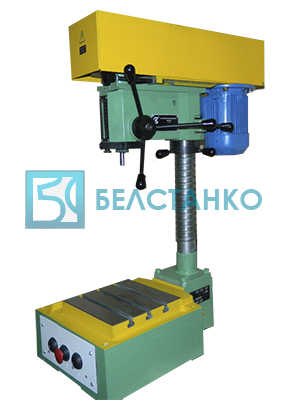
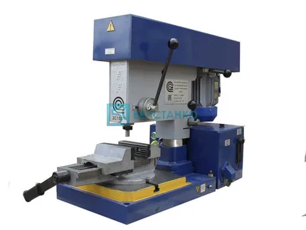
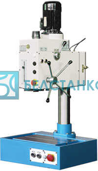
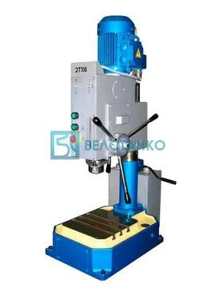
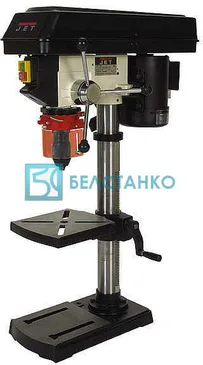
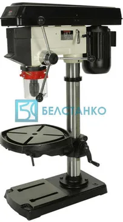
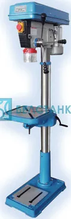
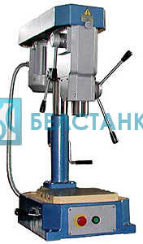
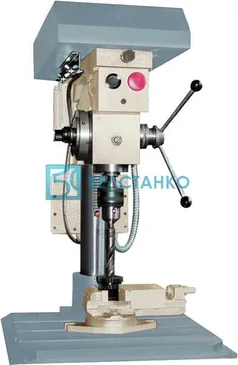

2М112
Станок настольно-сверлильный вертикальный
177 840 ₽
Станок настольно-сверлильный вертикальный
177 840 ₽
Настольно-сверлильный станок с автоподачей
239 400 ₽
Станок настольно-сверлильный
240 840 ₽
Настольно-сверлильный станок
348 000 ₽
Станок настольный сверлильный
255 360 ₽

Настольный вертикально-сверлильный станок
Цена по запросу


Сверлильный станок
29 500 ₽
Сверлильный станок
Цена по запросу
Сверлильный станок
57 000 ₽

Настольный сверлильный станок
Цена по запросу
Настольно-сверлильный станок
190 000 ₽

Станок настольно-сверлильный
Цена по запросу
1330-01 Станок вертикально-сверлильный настольный
Цена по запросу1330-03 Станок вертикально-сверлильный настольный
Цена по запросу
445-01 Станок настольно-сверлильный
Цена по запросу
Настольно-сверлильный станок
Цена по запросу
Станок настольно-сверлильный
261 000 ₽
Станок специальный сверлильный
Цена по запросу
Вертикально-сверлильный настольный станок
Цена по запросу